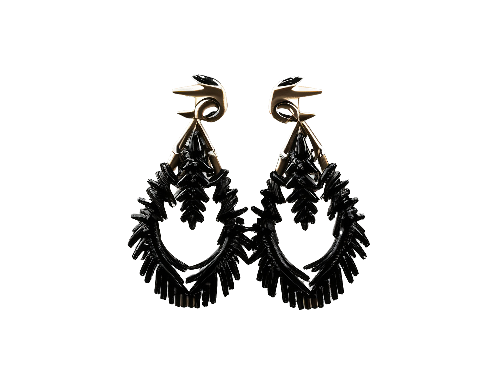

Een ode aan ‘The Upcycle’, een merk dat oude producten een nieuw leven inblaast. Geen LP is te grijs gedraaid en geen fiets te roestig. ‘The Upcycle’ weet oude spullen om te toveren in iets gloed nieuws. Dit maakt de producten uniek en zo kun je je onderscheiden van je vrienden. Je wilt toch niet de zelfde kom van de action die iedereen heeft? Of Die saaie riem van de H&M? Wie heeft er nou een riem gemaakt van een fiets? Of een ketting gemaakt van oude lepels? Door producten van The Upcycle te kopen kun jij je persoonlijke stijl uitdrukken en je onderscheiden van de rest.


